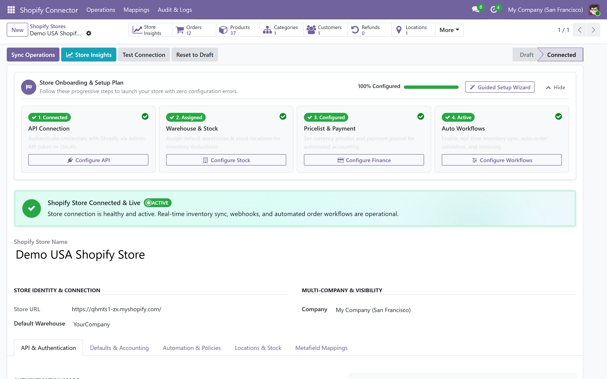
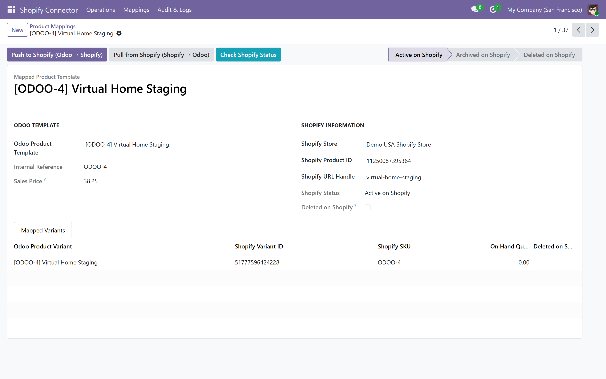
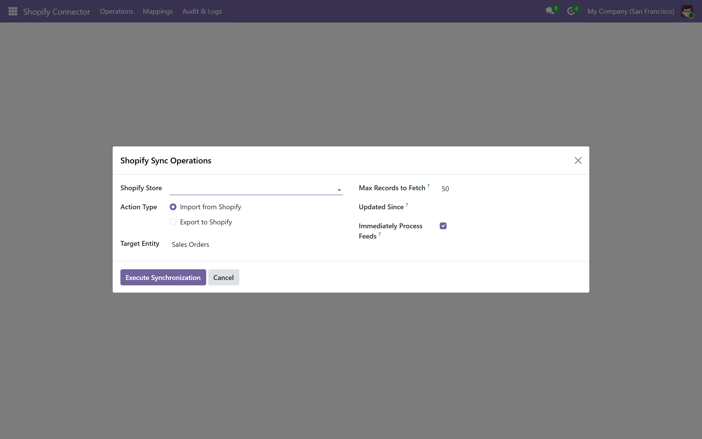
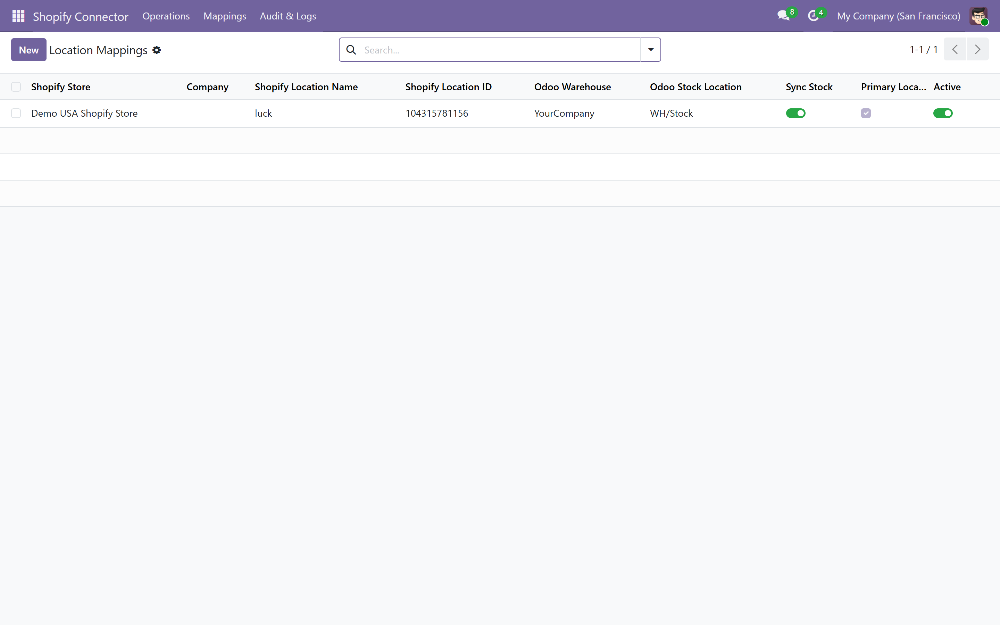
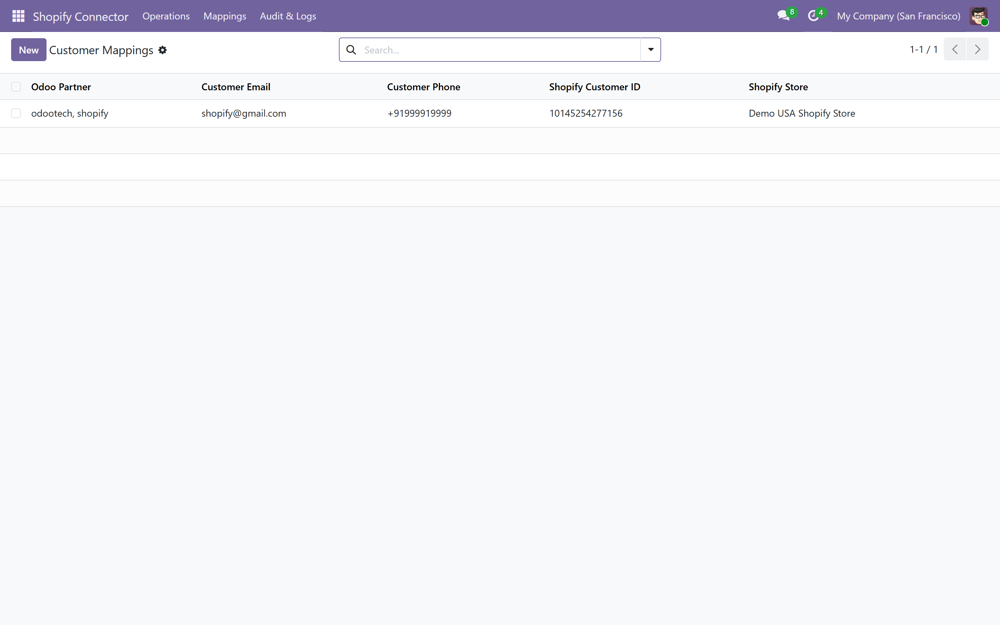

Shopify Odoo Connector: Standalone Multi-Store
Shopify Integration for Odoo 19
Connect unlimited Shopify stores to Odoo 19 with zero third-party dependencies. Engineered with high-throughput staging feeds, real-time stock balance locks, automatic multi-currency pricelist derivation, and complete order-to-reconciliation workflows.
A clear path from Shopify to Odoo

Lossless Feeds Staging
Incoming webhooks and bulk orders are buffered into high-speed staging feeds. Never lose an order during maintenance or inventory lockouts.
Real-Time Stock Sync
Automatic stock level updates dispatched to Shopify upon physical inventory adjustments, incoming shipments, and non-Shopify sale dispatches.
Order-to-Reconciliation
Automated confirmation, customer invoice generation, tax line mapping, discount line allocation, and automated payment journal reconciliation.
Multi-Store & Company
Manage dozens of stores across multiple Odoo companies. Strict multi-company domain segregation ensures zero cross-company inventory leakage.
Why Traditional Connectors Fail vs Our Odoo 19 Solution (Emipro & Webkul Alternative)
Built from scratch for Odoo 19 to eliminate the bottlenecks of legacy connectors.
Traditional Connectors
- Heavy 3rd-party module dependencies & complex bridges
- Direct database writes fail on lockups, dropping orders forever
- Stock double-deduction on Shopify orders fulfilled in Odoo
- Static pricelists cause currency and multi-currency checkout failure
- No detection if products are deleted on Shopify, causing broken sync
Shopify Odoo Connector (Odooteck)
- 100% Standalone: Pure direct Shopify Admin REST/GraphQL client
- Staging Feeds Buffer: Every payload is safely staged before ingestion
- Smart Stock Deduplication: Shopify delivery moves skip stock resync
- Dynamic Pricelist Engine: Auto-creates instance currency pricelists
- Live Status & 404 Detection: Flags deleted products in bright red UI
1. Real-Time Store Insights Analytics & Command Dashboard
Gain an instantaneous overview of your entire Shopify ecosystem directly from Odoo. The Store Insights dashboard displays total stores connected, live pending orders, unfulfilled deliveries, active sync errors, and direct 1-click operational triggers for importing and exporting data.

2. Multi-Store Instance Kanban & Granular API Configuration
Organize each Shopify storefront cleanly in an interactive Kanban view. Each store card provides instant status flags, color customization, direct shortcut links to instance mappings, feeds, logs, and a dedicated "Test Connection" button. Configure credentials with Shopify Private App Access Token or Custom App headers.


3. Lossless Staging Feeds Queue for Zero Dropped Orders
All incoming data from Shopify (Products, Orders, Customers, Categories) enters a dedicated Staging Feed (`shopify.feed`) before being committed to your core database. If an order references an unknown tax rate or missing product SKU, the feed captures the exact JSON payload, records a readable error trace, and allows 1-click retry once corrected.

4. Bi-Directional Product & Variant Mapping with Live 404 Delete Detection
Map standard products and complex matrix variants seamlessly. On every product template form in Odoo, a dedicated "Shopify Stores" tab allows you to export products to specific stores, push instant updates, pull remote changes, and check live publication status on Shopify. If a product is deleted on Shopify, Odoo instantly detects the HTTP 404 and flags the mapping in prominent red.


5. Automated Order-to-Cash Automation & Financial Invoice Reconciliation
Transform orders from Shopify into fully confirmed Odoo sales orders with zero human intervention. The engine matches existing customers or dynamically creates parent contacts with proper billing and shipping addresses. Automatically applies shipping lines, discount allocations, and fiscal tax lines. Paid orders automatically generate posted customer invoices and register payments into the designated bank journal.

6. High-Speed Shopify Sync Wizard & Multi-Warehouse Location Mapping
Run mass synchronizations effortlessly with the multi-purpose Sync Wizard. Select between Import (Orders, Products, Customers, Collections, Inventory) and Export (Inventory, Tracking, Products) with custom date filters and limit parameters. Multi-location mapping allows linking individual Odoo warehouse stock locations directly to corresponding Shopify fulfillment locations.


7. Full Audit History Logs & Customer Address Mapping Directory
Every API call, webhook trigger, import job, and stock adjustment is permanently recorded in the Sync History log with detailed success/failure statuses, records count, and raw execution payloads. Never wonder when an order was ingested or why a record skipped.


Feature Comparison Matrix: Odooteck vs Competitors
| Integration Capability | Odooteck Connector | Other Connectors |
|---|---|---|
| Architecture Dependency | 100% Standalone (Zero dependencies) | Requires 3rd-party base frameworks |
| Data Ingestion Queue | Lossless Staging Feeds (`shopify.feed`) | Direct writes (risk of dropped data) |
| Odoo 19 3-Tier Security | Full `res.groups.privilege` compliance | Legacy Odoo security model |
| Real-Time Stock Updates | Instant on stock move with anti-loop guard | Scheduled cron only / loop risk |
| Delete on Shopify Detection | Automatic 404 & webhook detection with red UI badge | No detection (crashes sync jobs) |
| Product Form Push/Pull | 1-Click Push & Pull buttons directly on Product Form | Bulk export menu only |
| Dynamic Currency Pricelist | Auto-creates missing currency pricelists dynamically | Manual pre-setup required |
| Multi-Company Segregation | Company domains on warehouses, locations, pricelists | Weak domain filtering |
Get Started in 4 Simple Steps
Install & Onboard
Install `odooteck_odoo_shopify_connector` and launch the streamlined setup wizard.
Connect API Credentials
Enter your Shopify myshopify.com URL and Admin API Access Token. Click "Test Connection".
Configure Locations
Fetch Shopify fulfillment locations and pair them with your preferred Odoo stock locations.
Enable Automation
Register real-time webhooks or schedule crons. Run initial sync via the central wizard!
Frequently Asked Questions
Does this connector require any external Python libraries?
No! The module uses standard Python libraries (`requests`, `hashlib`, `hmac`, `json`). There is zero dependency on third-party connectors or framework libraries.
Can I connect multiple Shopify stores to one Odoo database?
Yes, absolutely. You can configure unlimited `shopify.instance` records. Each store has its own credentials, order prefixes, journals, pricelists, and warehouse mappings.
How does real-time stock sync prevent infinite loops?
When an order originates from Shopify, stock deduction on delivery validation is automatically flagged with `skip_shopify_realtime_inventory=True`. This prevents Shopify from double-counting stock reductions.
Is it compatible with Odoo 19 3-tier security?
Yes! The module fully implements Odoo 19's `res.groups.privilege` model with granular User and Administrator privileges and strict ACL matrix rules.
Related Search Keywords & Core Capabilities
Easily discover all supported features and target topics covered by this integration module
Enterprise Support & Custom Integration
Need custom fields synchronized, advanced metafield mapping, or high-volume enterprise setup? Our Odoo & Shopify certified engineers are ready to assist.